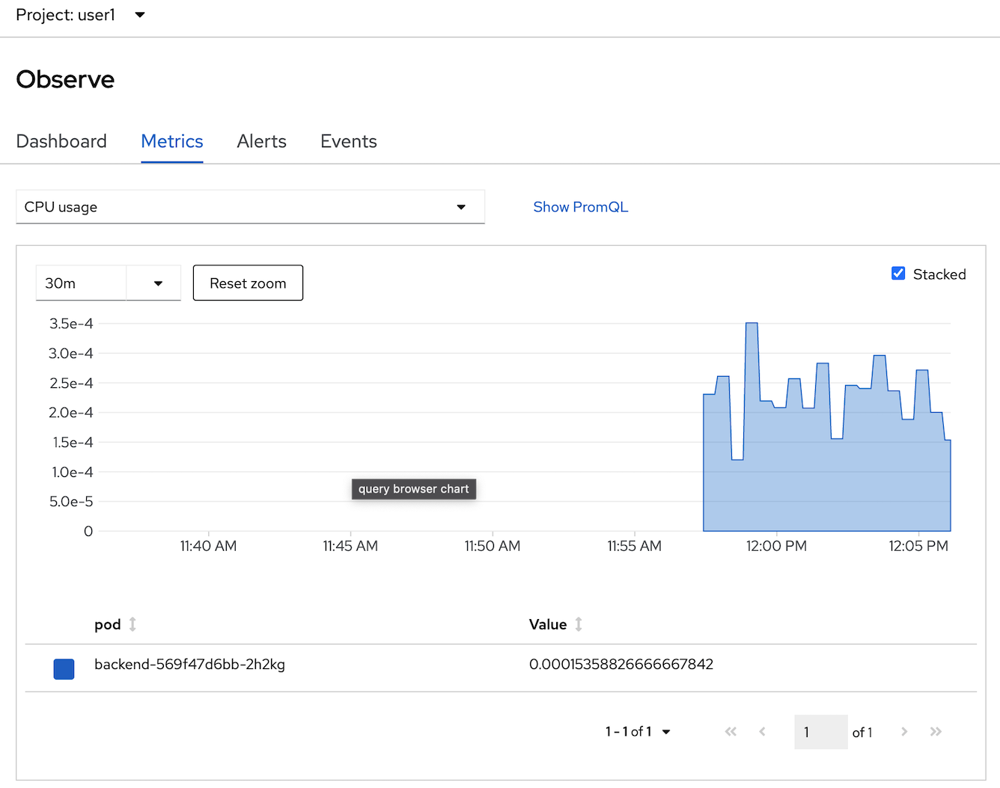
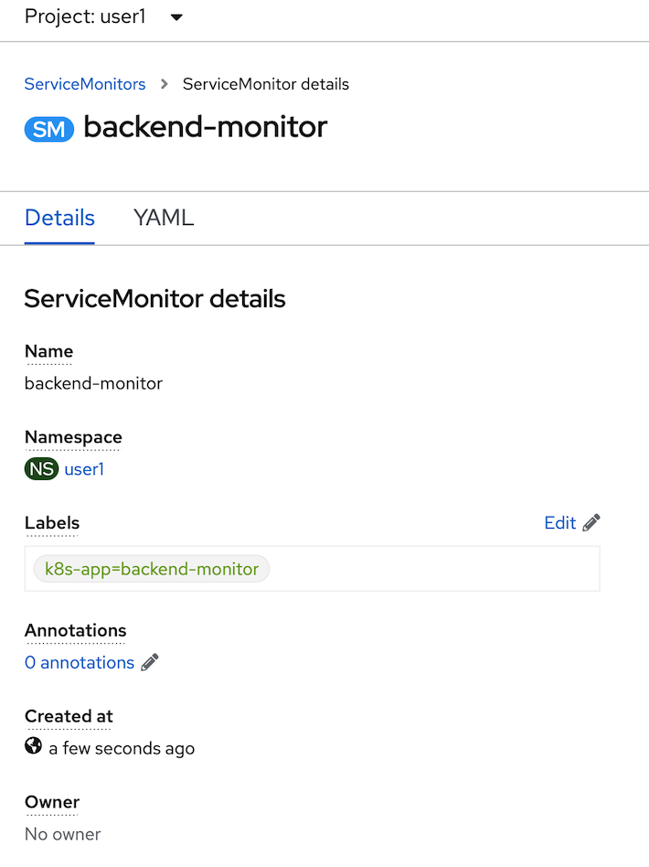
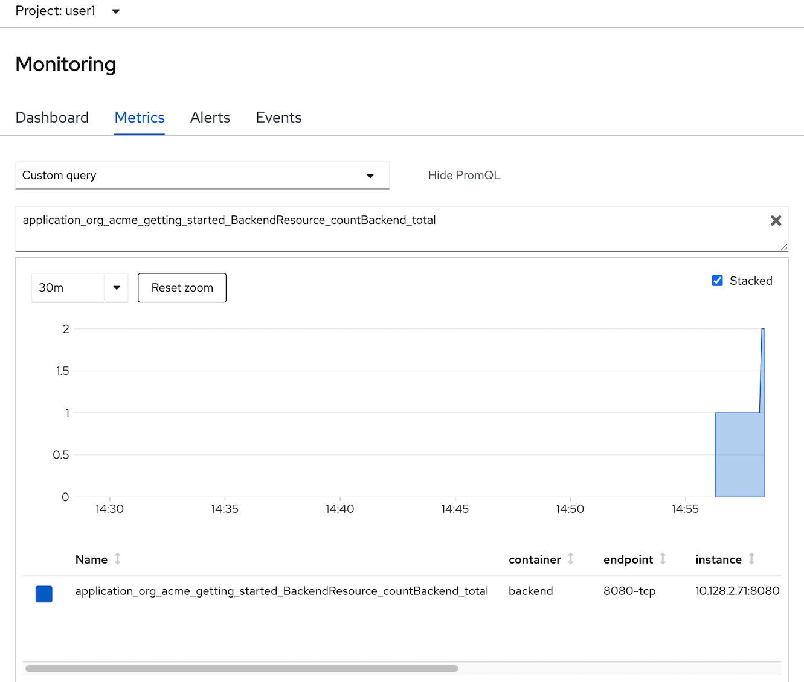
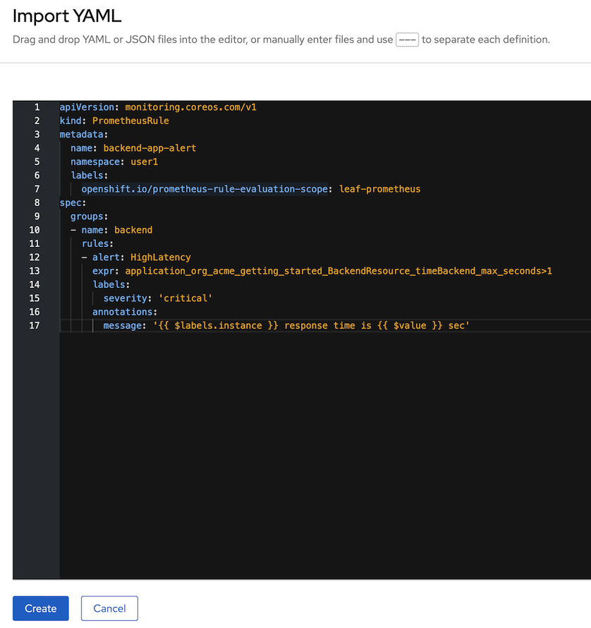

OOTB Application Monitoring, Alert & User workload monitoring
Prerequisite
- Complete Deploy application to openshift with s2i
- Go to your project (same as your username)
- Open Web Terminal by click '>_' on top of OpenShift Web Console
- use web terminal to run command line
OpenShift Default Monitoring
- view defalt monitoring per deployment, click topology, click duke icon (backend deployment), in backend deployment, select observe tab
- view CPU usage,
- view Memory usage

- view Project Monitoring, click Observe in left menu, select Dashboard Tab
- this page will show Monitoring Information of current project (all resources in this project)
- can filter by workload, click at dashboard dropdownlist and select Kubernetes/Compute Resources/Workload, type deployment, workload backend
- select tab Metrics to view performance/metrics information by type, click select query dropdown list to select default metrics information such as cpu usage, memory usage, filesystem usage, etc.
- select CPU usage, click check box 'Stacked' 
- change to another metrics such as memory usage.
- OpenShift Monitoring base on Prometheus Technology, you can use PromQL for retrive metric information, in select query dropdown list, select Custom query and type 'cpu' and wail auto suggestion,
- select 'pod:container_cpu_usage:sum' and type 'enter' button to view this metrics from PromQL
- click Alerts tab to view all alert (the Alerting UI enables you to manage alerts, silences, and alerting rules, we will create alert in next step in this session)
- click Events Tab to view All event in this project or filter by resource
Review Application Performance Metric Code
Developer can enable monitoring for user-defined projects in addition to the default platform monitoring. You can now monitor your own projects in OpenShift Container Platform without the need for an additional monitoring solution.
- review application metric code
- backend application use quarkus microprofile metrics libraly to generate application metrics
- example code: https://raw.githubusercontent.com/chatapazar/openshift-workshop/main/src/main/java/org/acme/getting/started/BackendResource.java
- example custom metrics in code:
@Counted( name = "countBackend", description = "Counts how many times the backend method has been invoked" ) @Timed( name = "timeBackend", description = "Times how long it takes to invoke the backend method in second", unit = MetricUnits.SECONDS ) @ConcurrentGauge( name = "concurrentBackend", description = "Concurrent connection" ) public Response callBackend(@Context HttpHeaders headers) throws IOException {
- review example metrics of backend application, go to web terminal
- call default quarkus microprofile metrics example
example resultoc exec $(oc get pods -l app=backend | grep backend | head -n 1 | awk '{print $1}') \ -- curl -s http://localhost:8080/q/metrics... # HELP vendor_memoryPool_usage_max_bytes Peak usage of the memory pool denoted by the 'name' tag # TYPE vendor_memoryPool_usage_max_bytes gauge vendor_memoryPool_usage_max_bytes{name="CodeHeap 'non-nmethods'"} 1352064.0 vendor_memoryPool_usage_max_bytes{name="CodeHeap 'non-profiled nmethods'"} 1018240.0 vendor_memoryPool_usage_max_bytes{name="CodeHeap 'profiled nmethods'"} 5218944.0 vendor_memoryPool_usage_max_bytes{name="Compressed Class Space"} 3856880.0 vendor_memoryPool_usage_max_bytes{name="Metaspace"} 3.1625864E7 vendor_memoryPool_usage_max_bytes{name="PS Eden Space"} 1.6777216E7 vendor_memoryPool_usage_max_bytes{name="PS Old Gen"} 1.8408896E7 vendor_memoryPool_usage_max_bytes{name="PS Survivor Space"} 5705344.0 - call custom quarkus microprofile metrics example
example resultoc exec $(oc get pods -l app=backend | grep backend | head -n 1 | awk '{print $1}') \ -- curl -s http://localhost:8080/q/metrics/application# TYPE application_org_acme_getting_started_BackendResource_timeBackend_seconds summary application_org_acme_getting_started_BackendResource_timeBackend_seconds_count 1.0 # TYPE application_org_acme_getting_started_BackendResource_timeBackend_seconds_sum gauge application_org_acme_getting_started_BackendResource_timeBackend_seconds_sum 2.503457774 application_org_acme_getting_started_BackendResource_timeBackend_seconds{quantile="0.5"} 2.503457774 application_org_acme_getting_started_BackendResource_timeBackend_seconds{quantile="0.75"} 2.503457774 application_org_acme_getting_started_BackendResource_timeBackend_seconds{quantile="0.95"} 2.503457774 application_org_acme_getting_started_BackendResource_timeBackend_seconds{quantile="0.98"} 2.503457774 application_org_acme_getting_started_BackendResource_timeBackend_seconds{quantile="0.99"} 2.503457774 application_org_acme_getting_started_BackendResource_timeBackend_seconds{quantile="0.999"} 2.503457774
Add Application Performance Metric to OpenShift
- create ServiceMonitor, go to Search in left menu,
- in search page, in resources drop down, type 'servicemonitor' for filter, click 'SM ServiceMonitor'

- Click Create ServiceMonitor button

- in Create ServiceMonitor Page, input below YAML for create ServiceMonitor to backend application
example:apiVersion: monitoring.coreos.com/v1 kind: ServiceMonitor metadata: labels: k8s-app: backend-monitor name: backend-monitor spec: endpoints: - interval: 30s port: 8080-tcp path: /q/metrics scheme: http - interval: 30s port: 8080-tcp path: /q/metrics/application scheme: http selector: matchLabels: app: backend
- click create and review your ServiceMonitor, click YAML tab to view your yaml code. 
- test call you backend application
- go to web terminal. test call your backend 2-3 times
BACKEND_URL=https://$(oc get route backend -o jsonpath='{.spec.host}') curl $BACKEND_URL/backend - click Monitor in left menu, select Metrics Tab
- in select query, change to custom query, type 'app' and wait auto suggesstion
- Remark: if you don't found metrics 'application*' in auto suggession, wait a few minute and retry again
- select 'application_org_acme_getting_started_BackendResource_countBackend_total', type enter. 
- change your custom PromQL such as average tocal call backend service in 1 minute is
- type: 'rate(application_org_acme_getting_started_BackendResource_countBackend_total[1m])'
- enter

- Optional: test call backend 2-3 times and check metrics change in Monitoring Pages
Add Alert to OpenShift
Check
PrometheusRuleapiVersion: monitoring.coreos.com/v1 kind: PrometheusRule metadata: name: backend-app-alert namespace: <username> labels: openshift.io/prometheus-rule-evaluation-scope: leaf-prometheus spec: groups: - name: backend rules: - alert: HighLatency expr: application_org_acme_getting_started_BackendResource_timeBackend_max_seconds>1 labels: severity: 'critical' annotations: message: ' response time is sec'HightLatency Alert will fire when response time is greateer than 1 sec
Create backend-app-alert click add icon (+) to open yaml editor

input PrometheusRule yaml in editor and create (change namespace before run) 
Test
HightLatency, run k6 as pod on OpenShift, change user1 to your usernameBACKEND_URL=https://$(oc get route backend -n <your username> -o jsonpath='{.spec.host}')/backend curl -o load-test-k6.js https://raw.githubusercontent.com/rhthsa/openshift-demo/main/manifests/load-test-k6.js oc run load-test -n <your username> -i \ --image=loadimpact/k6 --rm=true --restart=Never \ -- run - < load-test-k6.js \ -e URL=$BACKEND_URL -e THREADS=25 -e DURATION=2m -e RAMPUP=30s -e RAMPDOWN=30s- 25 threads
- Duration 2 minutes
- Ramp up 30 sec
- Ramp down 30 sec
Check for alert in Developer Console by select Menu Observe then select Alerts